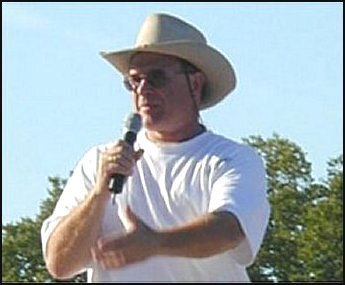

|
DRAGON'S FURY OFFICIAL WEB SITE |
|
 Jeff Head is a 59 year-old father of five children living in southwest Idaho. He and his wife of 38 years are also proud grandparents of eleven grandchildren, four grandsons and seven granddaughters...a real and special heritage to the Lord. Mr. Head is a member of the Sons of the American Revolution and a member of the U.S. Naval Institute. He worked as a designer, manager, director, and consultant for over twenty-five years in the defense, nuclear power, and computer industries where he was involved in various engineering, support, and management capacities. Projects he has been involed with have included the A-7 attack aircraft program, the MLRS (Multiple Launch Rocket System) program, the San Onofre Nuclear Power Project, the South Texas Nuclear Power Project, the Theater High Altitude Air Defense System (THAADS), and the NSSN Virginia Class nuclear attack submarines. While working as a director at Structural Dynamics Research Corporation, Mr. Head was involved in efforts at Thiokol Corporation's Strategic Operations Division to review & improve their operations in the years following the shuttle Challenger disaster. As a result of that effort, in 1992 Mr. Head was presented a Vice President’s award from Thiokol Strategic Operations for his team's efforts in the Computer-Aided-Engineering (CAE) area. As a senior manager at Micron Electronics, Mr. Head oversaw the development of the Trek and Trek2 lines of portable computers, setting up manufacturing and product development operations in the Republic of China. These products became the most successful line of portable computers in Micron Electronics' history. From 1995 through 2000, as a program manager and consultant, Mr. Head extensively overseas to the Far East, India, and portions of Eastern Europe on behalf of North American firms to help establish off-shore manufacturing and product development operations. Since September 2003, Mr. Head has worked for the U.S. Bureau of Reclamation helping maintain and protect regional infrastructure in Idaho. In December of 2009, Mr. Head was diagnosed with bone cancer of the lower spine, Chordoma. In April 2010 and went through three major surgeries at MD Anderson in Houston Texas. As a result of a lot of faith and prayers, and the expert and very capable knowledge and care of physians and staff, Mr. Head survived and returned to work in October 2010. You can read a journal of his entire experience at: My Sacral Chordoma: A Journal of my Experiences with malignant Bone Cancer. Mr. Head has also been personally involved in many civic events including the Klamath Basin Water Crisis in Oregon in 2001. He authored a book about the entire event called, "The Stand at Kalmath Falls," which is for sale online at Amazon, Barnes & Noble, and other outlets. As a result of that involvement, and as a reult of his work with respect to issues associated with the 9-11 attacks, in August of 2002 Mr. Head accepted an Eagle Award from the FreeRepublic Web Site as their "Person of the Year for 2001". His 9-11 work is outlined on a web site called, "Attack on America" memorializing the horrific events of Sep 11, 2001. In 2003, Mr. Head was presented a National Leadership Award from the National Republican Congressional Committee and named as the Honorary Idaho Chairman to their Business Advisory Council. In 2004, the National Republican Congressional Committee awarded Mr. Head the Ronald Reagan Gold Medal Award, and in 2006, Mr. Head was awarded the Congressional Order of Merit from the National Republican Congressional Committee. Finally, Mr. Head had been very active in his Church and with the Boy Scouts of America, helping with rafting trips, winter camps and wilderness camps in Idaho.
Idaho, USA |
|
[ ORDER DRAGON'S FURY ]
Back to DRAGON'S FURY Home Page
|